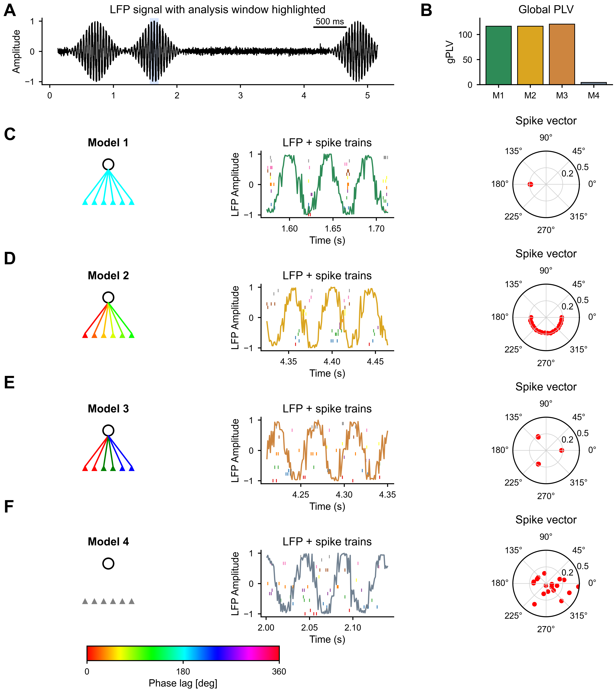

PyGPLA: A Python Toolbox for Generalized Phase Locking
Analysis
2026-03-22
Summary
PyGPLA is a Python implementation of Generalized Phase Locking
Analysis (GPLA) for multivariate spike-LFP coupling analysis (Safavi et al.
2023). For each frequency, GPLA constructs a complex coupling
matrix \(\hat{C}(f) \in \mathbb{C}^{N_c \times
N_u}\) between LFP channels and spike units, then applies
singular value decomposition (SVD). The leading singular value (gPLV)
summarizes population-level coupling strength, while the corresponding
singular vectors describe dominant LFP and spike coupling modes. PyGPLA
provides a full analysis workflow including LFP preprocessing,
coupling-matrix construction, SVD-based decomposition, and statistical
significance testing across frequency bands.
Statement of need
Neural recordings are becoming increasingly high-dimensional and
multimodal, demanding more sophisticated analysis tools. Simultaneous
analysis of spiking activity and local field potentials (LFP) is among
the most informative multi-modal approaches in systems neuroscience,
providing insight into the multi-scale mechanisms underlying cognitive
functions such as attention and memory (Buzsaki,
Anastassiou, and Koch 2012; Einevoll et al. 2013; Herreras 2016).
LFP oscillatory activity partly reflects subthreshold processes shared
by neuronal ensembles, and the synchronization between this activity and
spiking is hypothesized to coordinate neural populations during
cognition (Buzsaki, Anastassiou,
and Koch 2012; Hagen et al. 2016).
However, commonly used spike-field coupling measures are pairwise,
making them suboptimal for modern multichannel recording systems (Zeitler,
Fries, and Gielen 2006; Vinck et al. 2010, 2012; Jiang et al. 2015; Li,
Cui, and Li 2016; Zarei, Jahed, and Daliri 2018). As contemporary
electrophysiological techniques allow simultaneous recordings from
hundreds or thousands of sites, pairwise analyses generate
high-dimensional matrices whose size grows rapidly with the number of
channels, limiting interpretable extraction of large-scale collective
dynamics (Dickey
et al. 2009; Jun et al. 2017; Juavinett, Bekheet, and Churchland 2019;
Buzsaki 2004).
GPLA was developed to address these challenges by providing an
efficient multivariate framework together with statistical routines for
characterizing spike-field coupling at the population level (Safavi et al.
2023). However, the original algorithm was implemented in MATLAB,
limiting its accessibility. PyGPLA bridges this gap as an open-source
Python implementation, aligning with the extensive use of Python in
neuroscience as solidified by libraries such as MNE-Python (Gramfort et al.
2013), Nilearn (contributors, n.d.), and TranCIT (Nouri, Shao, and Safavi
2025).
Existing spike–field coupling methods - including the phase-locking
value (PLV), pairwise phase consistency (PPC) (Vinck et al. 2010), and
spike-field coherence - operate on individual spike–LFP channel pairs.
While informative for small-scale recordings, these pairwise approaches
face combinatorial scaling with modern high-density probes, and do not
directly capture the population-level structure of coupling. GPLA
addresses this gap by providing a single multivariate decomposition that
summarizes all spike–LFP interactions simultaneously, analogous to how
PCA summarizes covariance structure. To our knowledge, no other Python
package implements this multivariate approach to spike–field coupling
analysis.
Functionality
Core analysis pipeline
PyGPLA provides an integrated solution for multivariate spike–field
coupling analysis, including:
LFP preprocessing: Band-pass filtering, Hilbert
transform for analytic signal extraction, and optional reduced-rank
whitening to decorrelate channels while avoiding noise amplification
(Chavez et al.
2006).
Coupling-matrix construction: Assembly of the
complex-valued coupling matrix \(\widehat{\mathbf{C}}(f) \in \mathbb{C}^{N_c \times
N_u}\), where each entry sums the analytic LFP evaluated at all
spike times of a given unit.
SVD-based decomposition: Extraction of the gPLV
(leading singular value) and associated LFP and spike spatial vectors,
with rotational phase alignment, unwhitening of LFP vectors, and
spike-vector rescaling.
Statistical testing: Significance assessment via
two complementary approaches: (1) surrogate-based testing using multiple
spike-jittering schemes, and (2) an analytical test based on
Marchenko–Pastur Random Matrix Theory (RMT) (Anderson, Guionnet, and Zeitouni
2010).
Simulation tools: Synthetic data generators for
phase-locked and transient-coupling scenarios, supporting
reproducibility and method validation.
Normalization options
The package supports two normalization modes for the coupling matrix:
PLV-type normalization (\(1/N_m^{\mathrm{tot}}\)) for phase-only
analysis, and unit-variance normalization (\(1/\sqrt{N_m^{\mathrm{tot}}}\)) required for
the analytical RMT-based significance test.
Example
We illustrate PyGPLA on synthetic transient-coupling simulations
generated with the script paper/figures/figure2.py. As
shown in , the figure compares four coupling models and reports their
recovered gPLV values, together with representative LFP and spike-train
windows and the associated spike-vector structure.

Illustrative PyGPLA simulation example
produced by paper/figures/figure2.py. Panel A shows an LFP
trace with the analysis window. Panel B shows gPLV values across four
simulated coupling models (M1-M4). Panels C-F display, for each model, a
schematic, LFP plus spike-train segment, and the recovered spike vector
in polar coordinates.
Code snippets and detailed instructions for reproducing these results
are available in the package documentation and example scripts in the
repository.
Implementation details
The pygpla package is distributed under the BSD-3-Clause
license. PyGPLA follows a layered architecture separating preprocessing
(pygpla.preprocessing), core computation
(pygpla.core), statistical testing
(pygpla.stats), simulation utilities
(pygpla.simulations), and configuration
(pygpla.config). The high-level API
(pygpla.api.gpla) orchestrates the full pipeline in a
single call, keeping default usage compact while preserving access to
lower-level components for advanced analyses. The package is built on
NumPy (Harris et al.
2020) and SciPy (Virtanen et al. 2020), and
includes a pytest test suite with continuous integration
via GitHub Actions.
Acknowledgments
We acknowledge contributions from collaborators who provided feedback
during the development of PyGPLA. Shervin Safavi acknowledges the
support from the Max Planck Society and an add-on fellowship from the
Joachim Herz Foundation.
References
Anderson, G. W., A. Guionnet, and O. Zeitouni. 2010. An Introduction
to Random Matrices. Cambridge University Press.
Buzsaki, Gyorgy, Costas A. Anastassiou, and Christof Koch. 2012.
“The Origin of Extracellular Fields and Currents–EEG, ECoG, LFP
and Spikes.”Nature Reviews Neuroscience 13 (6): 407–20.
https://doi.org/10.1038/nrn3241.
Chavez, M., M. Besserve, C. Adam, and J. Martinerie. 2006.
“Towards a Proper Estimation of Phase Synchronization from Time
Series.”Journal of Neuroscience Methods 154 (1-2):
149–60. https://doi.org/10.1016/j.jneumeth.2005.12.009.
Dickey, Adam S., A. J. Suminski, Y. Amit, and Nicholas G. Hatsopoulos.
2009. “Single-Unit Stability Using Chronically Implanted
Multielectrode Arrays.”Journal of Neurophysiology 102
(2): 1331–39. https://doi.org/10.1152/jn.90920.2008.
Einevoll, Gaute T., Christoph Kayser, Nikos K. Logothetis, and Stefano
Panzeri. 2013. “Modelling and Analysis of Local Field Potentials
for Studying the Function of Cortical Circuits.”Nature
Reviews Neuroscience 14 (11): 770–85. https://doi.org/10.1038/nrn3599.
Gramfort, Alexandre, Martin Luessi, Eric Larson, Denis A. Engemann,
Daniel Strohmeier, Christian Brodbeck, Roman Goj, et al. 2013.
“MEG and EEG Data Analysis with
MNE-Python.”Frontiers in
Neuroscience 7 (267): 1–13. https://doi.org/10.3389/fnins.2013.00267.
Hagen, Espen, Daniel Dahmen, Maria L. Stavrinou, Henrik Linden, Tom
Tetzlaff, Sacha J. van Albada, and Markus Diesmann. 2016. “Hybrid
Scheme for Modeling Local Field Potentials from Point-Neuron
Networks.”Cerebral Cortex 26 (12): 4461–96. https://doi.org/10.1093/cercor/bhw237.
Harris, Charles R., K. Jarrod Millman, Stéfan J. van der Walt, Ralf
Gommers, Pauli Virtanen, David Cournapeau, Eric Wieser, et al. 2020.
“Array Programming with NumPy.”Nature 585: 357–62. https://doi.org/10.1038/s41586-020-2649-2.
Jiang, Hong, Ali Bahramisharif, Marcel A. J. van Gerven, and Ole Jensen.
2015. “Measuring Directionality Between Neuronal Oscillations of
Different Frequencies.”NeuroImage 118: 359–67. https://doi.org/10.1016/j.neuroimage.2015.05.044.
Juavinett, Ashley L., Galal Bekheet, and Anne K. Churchland. 2019.
“Chronically Implanted Neuropixels Probes Enable High-Yield
Recordings in Freely Moving Mice.”eLife 8: e47188. https://doi.org/10.7554/eLife.47188.
Jun, James J., Nicholas A. Steinmetz, Joshua H. Siegle, Daniel J.
Denman, Maxime Bauza, Bianca Barbarits, et al. 2017. “Fully
Integrated Silicon Probes for High-Density Recording of Neural
Activity.”Nature 551: 232–36. https://doi.org/10.1038/nature24636.
Li, Zhixiong, Dian Cui, and Xiaoli Li. 2016. “Unbiased and Robust
Quantification of Synchronization Between Spikes and Local Field
Potential.”Journal of Neuroscience Methods 269: 33–38.
https://doi.org/10.1016/j.jneumeth.2016.05.004.
Nouri, Salar, Kaidi Shao, and Shervin Safavi. 2025. “TranCIT:
Transient Causal Interaction Toolbox.”Journal of Open Source
Software 10 (116): 9302. https://doi.org/10.21105/joss.09302.
Safavi, Shervin, Theofanis I. Panagiotaropoulos, Vishal Kapoor, Juan F.
Ramirez-Villegas, Nikos K. Logothetis, and Michel Besserve. 2023.
“Uncovering the Organization of Neural Circuits with Generalized
Phase Locking Analysis.”PLoS Computational Biology 19
(4): e1010983. https://doi.org/10.1371/journal.pcbi.1010983.
Vinck, Martin, Francesco P. Battaglia, Thilo Womelsdorf, and Cyriel M.
A. Pennartz. 2012. “Improved Measures of Phase-Coupling Between
Spikes and the Local Field Potential.”Journal of
Computational Neuroscience 33 (1): 53–75. https://doi.org/10.1007/s10827-011-0374-4.
Vinck, Martin, Marijn van Wingerden, Thilo Womelsdorf, Pascal Fries, and
Cyriel M. A. Pennartz. 2010. “The Pairwise Phase Consistency: A
Bias-Free Measure of Rhythmic Neuronal Synchronization.”NeuroImage 51 (1): 112–22. https://doi.org/10.1016/j.neuroimage.2010.01.073.
Virtanen, Pauli, Ralf Gommers, Travis E. Oliphant, Matt Haberland, Tyler
Reddy, David Cournapeau, Evgeni Burovski, et al. 2020. “SciPy 1.0:
Fundamental Algorithms for Scientific Computing in Python.”Nature Methods 17: 261–72. https://doi.org/10.1038/s41592-019-0686-2.
Zarei, Maryam, Maryam Jahed, and Mohammad R. Daliri. 2018.
“Introducing a Comprehensive Framework to Measure Spike-LFP
Coupling.”Frontiers in Computational Neuroscience 12:
78. https://doi.org/10.3389/fncom.2018.00078.
Zeitler, Markus, Pascal Fries, and Stan Gielen. 2006. “Assessing
Neuronal Coherence with Single-Unit, Multi-Unit, and Local Field
Potentials.”Neural Computation 18: 2256–81. https://doi.org/10.1162/neco.2006.18.9.2256.